Part 1) Setting Up The Artemis Board
Objective
In this part, the aim is to setup and verify some basic functionalities of the Arduino IDE and the Artemis board. This involves programming the board, using the board LED, transmitting and receiving serial messages over USB, as well as employing the onboard temperature sensor and Pulse Density Microphone.
Artemis Examples
The setup of the Arduino IDE and the Artemis board went pretty well following the Sparkfun Setup Instructions. Other documents related to the Artemis board can be found here.
Blinky
The initial step is the most classic test: blinking the onboard LED. This serves as a reliable benchmark
to verify the correct installation of the core and the ability to upload code to the board. The video below
shows the LED blinking periodically.
Serial Communications
This example includes sending and receving messages via UART ports. The following video demonstrates
the Artemis receiving user input through the serial interface and echoing it back to the serial monitor.
Temperature Sensor
This piece of example code from File->Examples->Apollo3->Example02_AnalogRead works for testing the
functionality of the onboard temperature sensor. As shown in the following video, placing a finger on the board
for a while and then removing the finger causes the temperature reading to gradually decrease from around 33900
to approximately 33500. This indicates that the temperature sensor is operating normally.
Microphone
This example code was run for testing the functionality of the onboard microphone. The video below demonstrates that
the loudest frequency of the current ambient sound is continuously outputted to the serial monitor. When whistling towards
the board, this reading changes with the pitch correspondingly, showing that the microphone is functioning correctly.
Additional Task: Musical Note "A" Recognizer
By combining the above features of blinking LED and the microphone functionality, a small application for recognizing
the musical note "A" has been developed. As demonstrated in the following video, when the note "A4" (440Hz) is played
near the Artemis, the onboard LED lights up, and it remains off otherwise.
The microphone example code already detects the loudest frequency of surrounding sounds, so the desired functionality
can be achieved simply by incorporating the LED controls when the loudest frequency falls within the acceptable error range
of the frequency corresponding to note "A4". Below is a snippet of the code:
Part 2) Bluetooth Connection
Objective
The objective of this part is to set up connections between the computer and the Artemis board via Bluetooth Low Energy (BLE). On the computer side, Python within a Jupyter notebook is used, while on the Artemis side, the Arduino programming language is employed, both combined together for establishing the communication. A framework is set up for transmitting data through Blutetooth, which will be benificial for subsequent lab sessions in debugging and interacting with the robot.
Prelab
It is beneficial for a Python project to have a virtual environment to isolate the Python interpreter,
libraries and scripts from other files and libraries on the computer. A virtual environment named
"FastRobots_ble" has been created for this purpose, while all Python code in the codebase is placed within
this environment and executed with Jupyter. Besides, the Arduino IDE and the ArduinoBLE library are installed.
Running the provided basecode ble_arduino.ino outputs the MAC address of the Artemis board, as shown below.
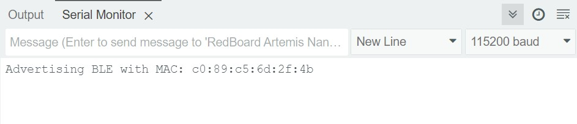
A new BLEService Universally Unique Identifier (UUID) is also generated as shown in the following image:
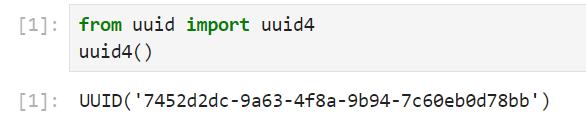
The above values are updated into the configuration files and the arduino code for the computer to recognize the Artemis board.
Understanding the provided codebase and BLE operation between the computer and the Artemis is crucial.
The BLE service on the Artemis board is initiated based on UUID matching. Once a stable BLE connection is established,
with the relevant libraries imported, users can invoke functions on the Jupyter end
to send commands. The Artemis end responds accordingly to the received information, including but not limited to
parsing commands and manipulating character arrays. Users can also enhance the interactivity of the Artemis board by modifying the
case conditions within handle_commands() and the corresponding enum variables.
Lab Tasks
ECHO
The Artemis board was programmed to augment the received message and send the result back to the computer, as demonstrated below:
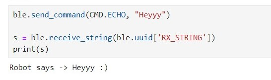
This feature was achieved by making the following modifications in case ECHO of handle_commands() on the Arduino end:
Notably, we have adopted a maximum characteristic value length of 150 bytes. However, with the ECHO command,
it is possible that the message received by the Artemis does not exceed this limit while the augmented message does.
To bolster system robustness, logic for checking the characteristic length and outputing error messages was added.
GET_TIME_MILLIS
A command GET_TIME_MILLIS was introduced, prompting the robot to get the current time in milliseconds and respond by
writing a string such as "T:123456" to the string characteristic, as shown below.
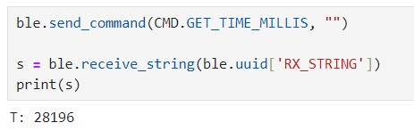
To incorporate this new command, adjustments were made to the enum variables storing the command names on both the Python and Artemis ends,
and a new case with the same name was added to the handle_commands() function. The code snippet is as follows:
Notification Handler
A callback function is of great use in this scenario because the computer end might not always be aware of
how many messages the board has sent. A callback function, in this case a notification handler, enables automatically update of transmission process
whenever the transmitted message appear to be changed. Also, in this way there is no need for consistently invoking the blocking function
receive_string() anymore.
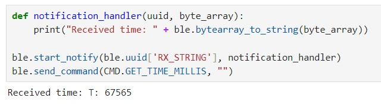
As shown in the screenshot, the notification handler took a UUID and a bytearray of the characteristic value
as parameters, and was put into the start_notify function to be activated. The message sent from the Artemis was automatically extracted and printed
by the notification handler.
Effective Data Transfer Rate
To calculate the effective data transfer rate, a new command GET_TIME_MILLIS_LOOP was introduced,
in case of which the Artemis gets the current time in milliseconds for 1000 times. On the Python end, the notification handler notifies the
messages and store them in an array, as shown below.
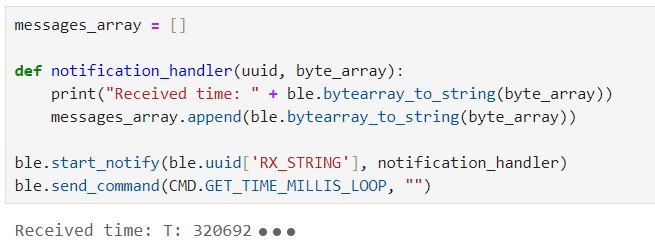
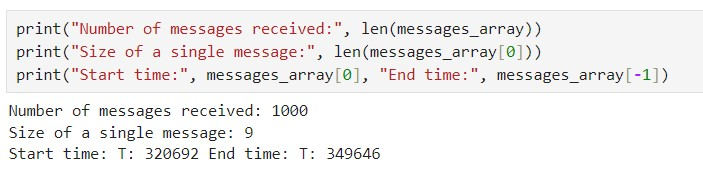
Each messages consisted of 9 characters, translating to 9 bytes. The effective data transfer rate could be determined by multiplying the number of messages
by the message size and dividing by the total transmission time. In this case, the result is approximately 311 bytes per second.
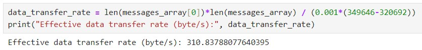
Storing before Sending: SEND_TIME_DATA
In the previous task, the strategy was to send the data over BLE immediately upon getting each time stamp. Instead, GET_TIME_MILLIS_LOOP
was modified to store the time stamps in an array; a new command, SEND_TIME_DATA was introduced for looping through the array and sending the data points.
The array length and loop count were manually set to 1000, ensuring sufficient coverage to reflect the average data transmission rate. After the stored time stamps
had been sent, the current time in milliseconds was transmitted for calculating the total time the whole process took.
Below are the pseudo code and the results.
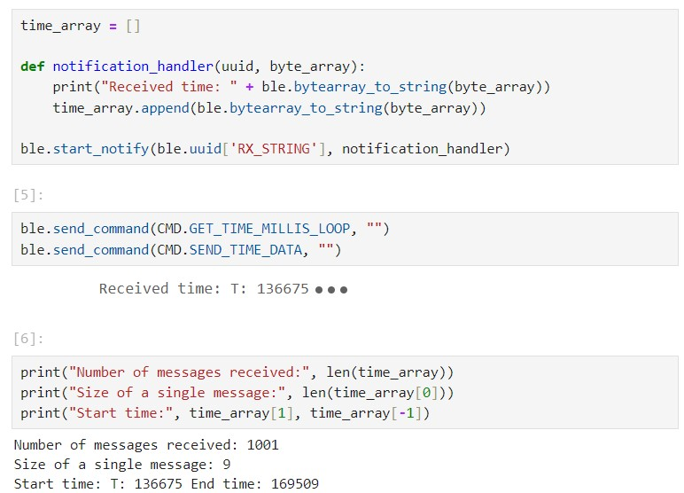
GET_TEMP_READINGS
A second array was created to store temperature readings, matching the size of the time stamp array. A GET_TEMP_READINGS command was added
to loop through both arrays concurrently, transmitting each temperature reading with its corresponding time stamp.The notification handler parsed the
received strings and populated the data into two seperate lists, as shown below:
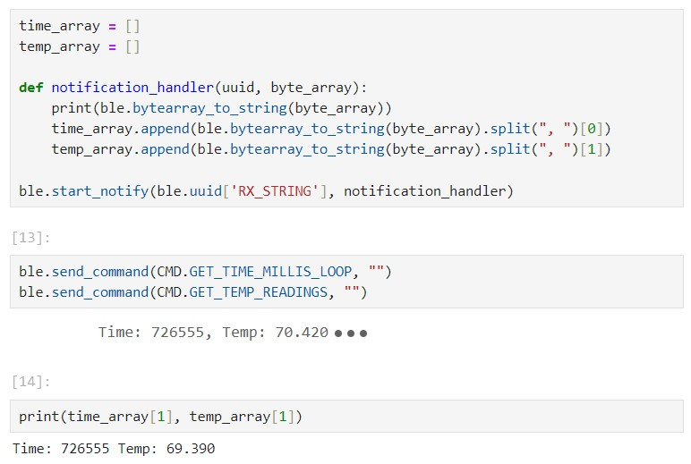
Discussion
Comparing the above two methods, it took 29 seconds to transmit 9000 bytes using one approach and 32 seconds to transmit 9009
bytes using the other, so the speed difference was not significant. The main difference was about how data was acquired and
transmitted. For the method where data took turns to be acquired and transmitted, there's a noticeable gap between adjacent
timestamps. In contrast, for the method where data was first stored and then transmitted, many identical timestamps were
stored in the array. In this case, the data acquisition process was not blocked by transmission, allowing multiple calls to
the millis() function within a millisecond.
The latter method could record between 20 and 60 times per millisecond according to the transmitted data. The advantage of this approach
is the ability to record information at a high frequency, while the downside is that it may not deliver information to the computer immediately.
On the other hand, the advantage of the other approach is that the data received by the computer is relatively real-time, but it may come at a lower
frequency. If the robot is used to check environmental quality, it can first collect data at a high frequency and store it.
However, if it's used for real-time monitoring, it should transmit data in real-time at a lower frequency to provide possibility of instant feedback.
Additional Task: Effective Data Rate and Overhead
To compare the impact of different message lengths on the effective data transfer rate, a SEND_MESSAGES command was
introduced. Depending on the command string parameter, two different responses were hardcoded within the case, each looped
a certain number of times, as shown in the pseudo code below:
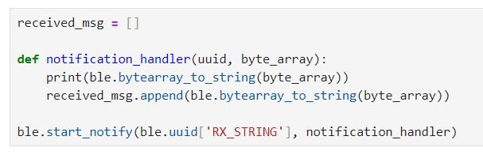
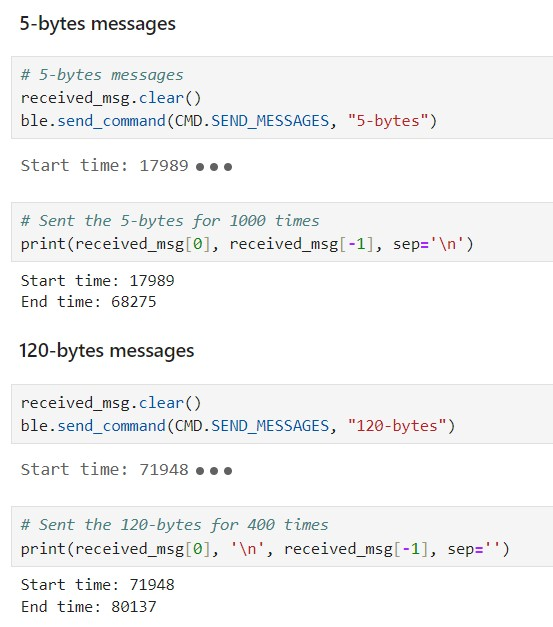
From the screenshot above, it can be observed that in the case of sending short messages, 5000 bytes were transmitted in 51
seconds, resulting in a data transfer rate of approximately 100 bytes per second. On the other hand, when sending long
messages, 4800 bytes were transmitted in 8 seconds, resulting in a significantly higher data transfer rate of
approximately 600 bytes per second.
An attempt was made to write a generic case for iterating and testing the transmission of messages with varying lengths
by extracting specific characters from the command. However, repeated disconnection issues happened with the
Artemis when executing the function. Therefore, similar to the cases of 5-byte and 120-byte messages, the
corresponding scenarios were hardcoded. The summarized results are presented in the graph below:
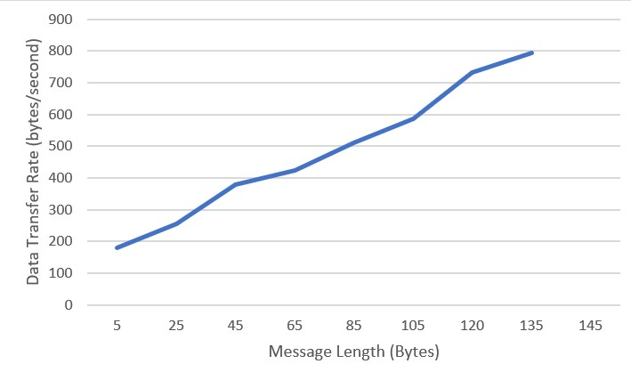
It can be clearly observed that short packets introduce a lot of overhead while larger replies help to reduce it.
Additional Task: Reliability
The reliability of the system was tested by transmitting the data at a higher rate. The time inverval between transmitting
floats was adjusted from 1000 to 1, and not a single message was missed, as shown below.
Discussion & Conclusion
In this lab, I learned to effectively use Jupyter for interacting with live code. I also had my first encounter with the Bluetooth Low Energy, which I believe will facilitate my future projects. During the lab, I encountered several instances where the output of the Python code did not match my expectations. Eventually it was restarting the IPython kernel that resolved the issue. This problem may have been caused by repeatedly defining functions - a good thing to bear in mind.